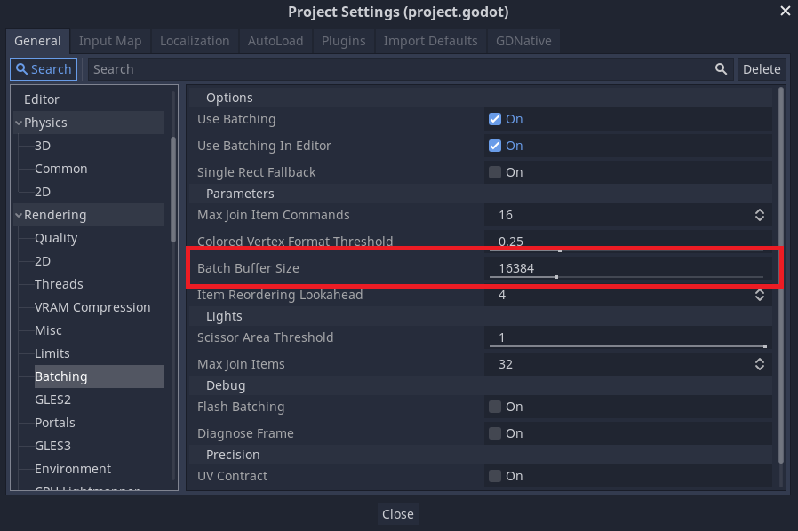
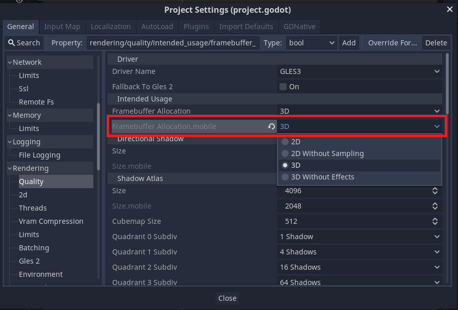
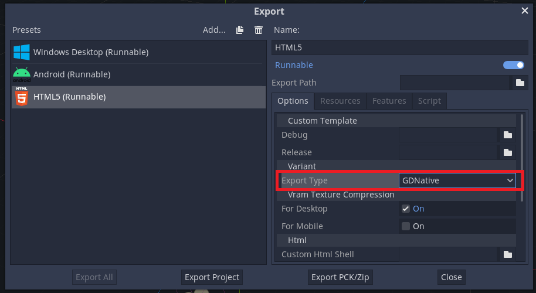

FAQ¶
Common¶
WARNING: poly has too many indices to draw, increase batch buffer size¶
If you get the above warning when drawing 2D, increase the Batch Buffer Size in the project settings.

Mobile (iOS/Android)¶
Distortion and Soft particle not work¶
The following Effekseer features will not work with the default settings on mobile targets.
Distortion shader
Soft particles
For the above effects to work, you need to set 3D or 2D to Framebuffer Allocation.mobile in Quality of Godot’s project settings.

HTML5¶
Effekseer not work in HTML5¶
The Export Type must be set to GDNative to enable the Effekseer plugin on HTML5 targets.
